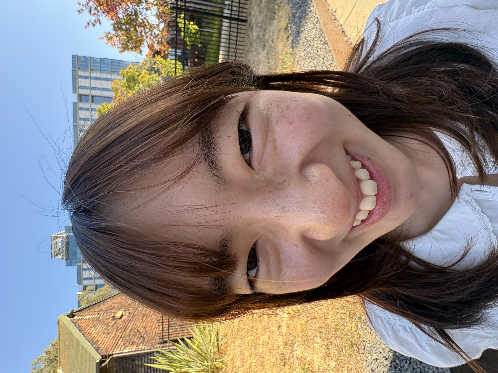
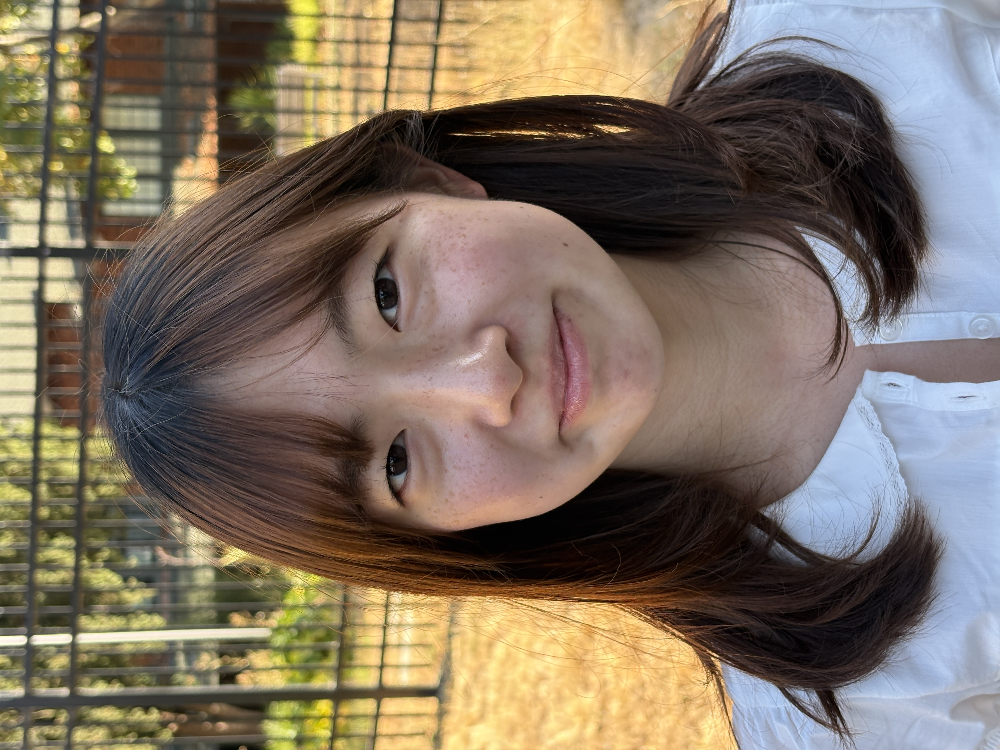
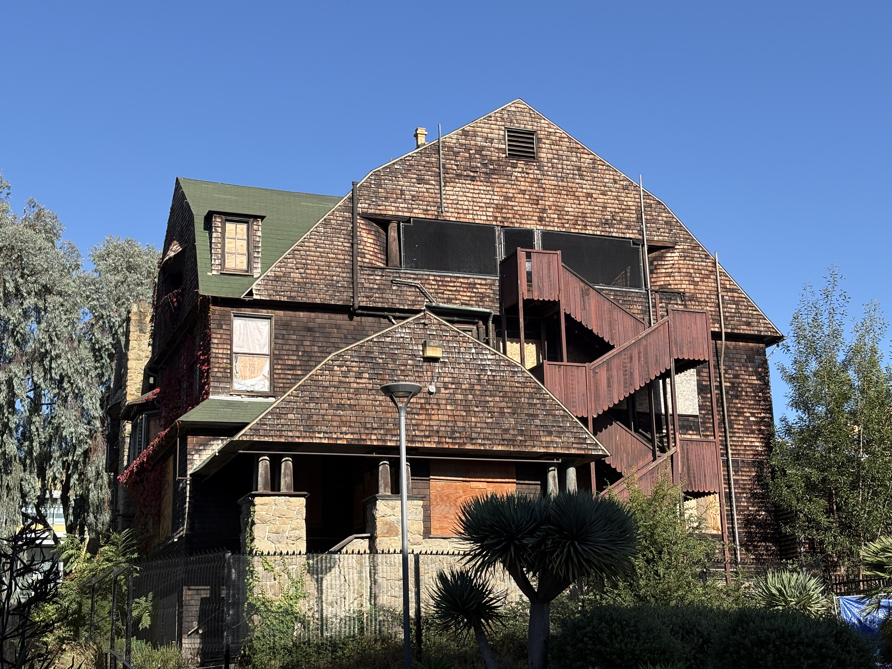
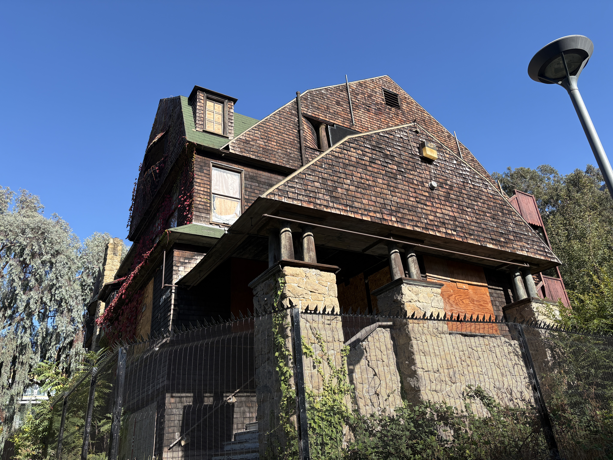
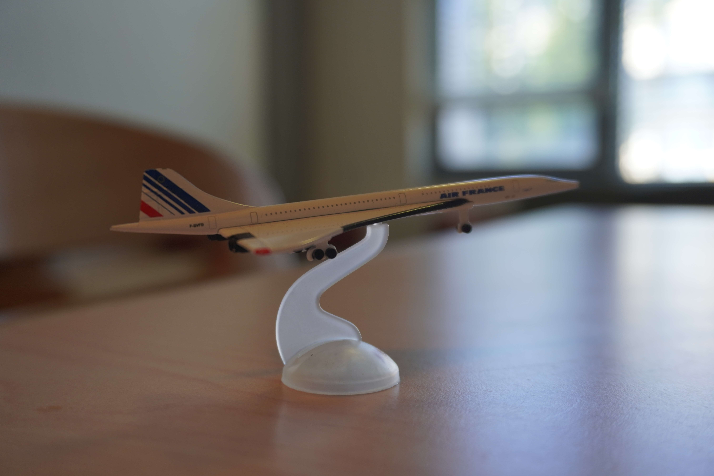
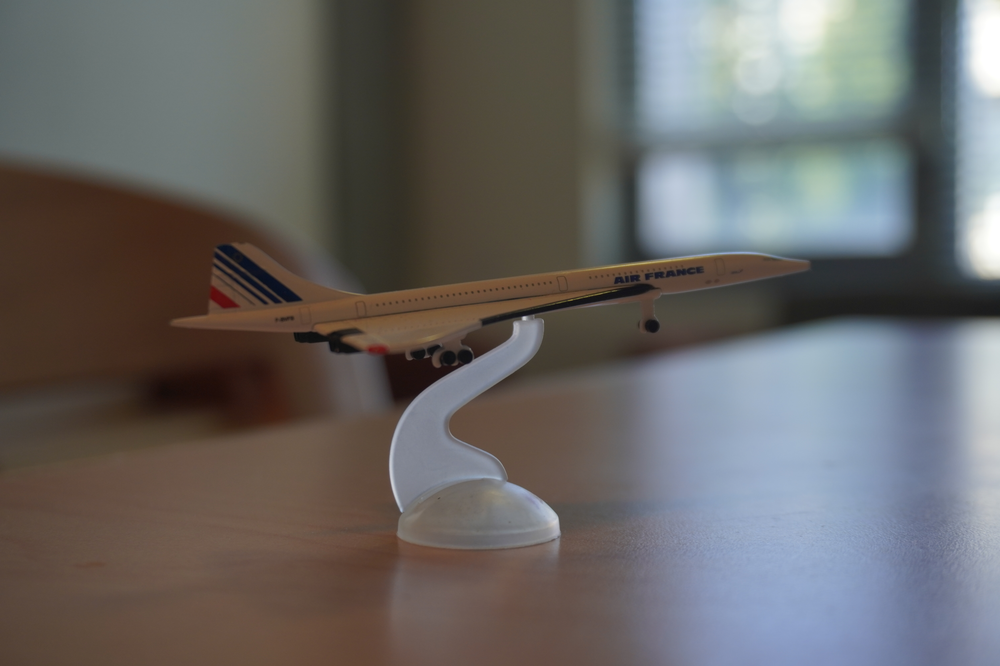
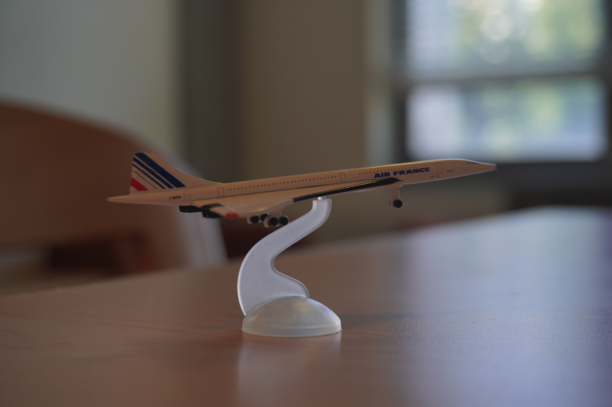
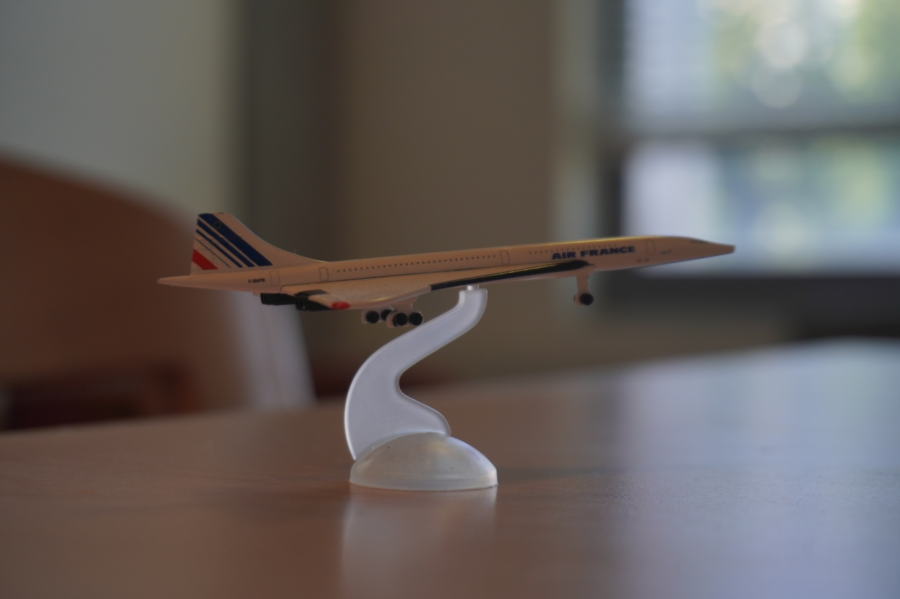
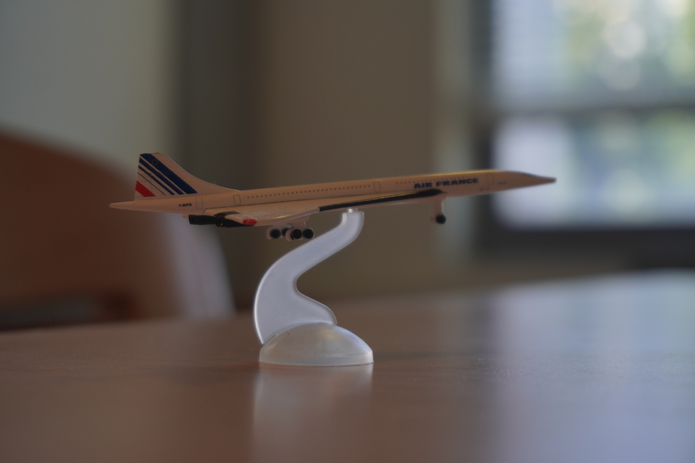

Project 0

Close up - the wrong way

Step back further & zoom in - the right way
Comparing two photos, the nose occupies a much larger proportion of the face in the close-up image. This happens because when the camera is close to your face the relative distance between the lens to the nose is much closer than that of the lends to the further facial parts such as ears and therefore the nose is magnified more than the cheeks and ears.
In the zoomed in image, the facial features are closer to their natural proportions because all of the facial features are almost equally distanced from the lens.

Far away & zoomed in

Move closer & zoom out
When you take photo from farther away and zoom in, the depth in the building structure and the background look compressed and flat. Similar to part 1, this is caused because of the relative distance between the camera and the objects in the photo being similar.
On the other hand, when you take photo from closer up, those depth differences between objects becomes more prominent.
Nearby objects therefore appear noticeably larger than objects farther away, creating a stronger sense of depth without the same compressed appearance.
Concorde model!




